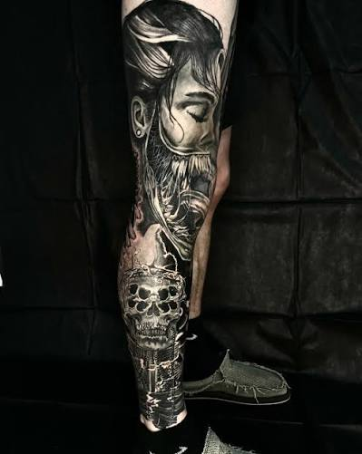

Warrior sleeve
Four sittings over three months. We started from a single reference and drew the rest onto the leg so the figure follows the calf rather than fighting it. The skull at the ankle came last, once we could see how much room was left.